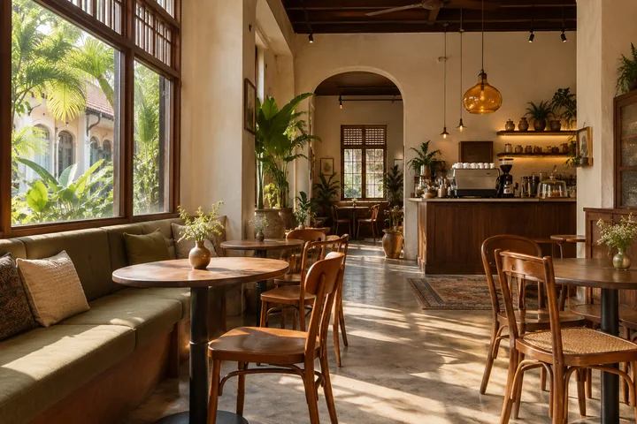

MAKE A LITTLE ROOM IN YOUR DAY
We'll put
the kettle on.
A coffee with a friend, a catch-up with a few.
Try planning your
next little pause.
THE RHYTHM OF OUR WEEK
Time for a visit.
- Monday, Wednesday & Thursday
- 9am – 6pm
- Friday – Sunday
- 9am – 8pm
- Tuesday
- Taking a break
Imagined in Ipoh, Perak.
This is a fictional café concept. There is no physical outlet, map pin or operating phone number.

TRY THE BOOKING EXPERIENCE
A table for…
Choose a day and we'll prepare an enquiry message for you to preview.
BEFORE YOU DROP BY
A few little things.
Is this an actual café?
No. Sela Kopi is a fictional concept created to demonstrate TechCraft Empire's web design and development. The menu, hours and imagery are illustrative.
What happens when I try the booking form?
You can choose an illustrative date, time and party size, then preview a formatted enquiry message. No message is sent and no booking is made.
Can this work for a real café?
The design demonstrates a menu and enquiry flow. For a real business, its confirmed menu, opening hours and contact channel can be connected to the website.